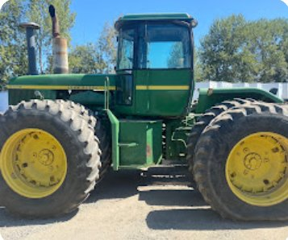

What We Fix
Services
We work exclusively on farm, ag, and fleet diesel equipment. We do not service personal cars or trucks. Setting that expectation up top saves everyone time.
Category
Engine & Diagnostics
Diagnostics & Repair
- Diesel engine diagnostics and repair
- Preventive maintenance and tune-ups
- Fuel system and injector service
What This Covers
Hard starts, rough idle, power loss, excess smoke, and fuel delivery problems on the engines that run your equipment, not the ones that run your commute.
Category
Equipment Systems
Hydraulic Systems
Leaks, weak lift, slow cycle times, and full hydraulic system repair.
Electrical Systems
Diagnostics and repair for wiring, starters, alternators, and control systems.
Transmission & Drivetrain
Transmission and drivetrain work to keep power getting to the ground.
Category
Field & Seasonal
On-Site & Seasonal
- Mobile / on-site repair for equipment that can't be trailered in
- Pre-season inspections: planting and harvest prep
- Emergency breakdown response
Why It Matters
During planting and harvest, downtime isn't an inconvenience. It's lost days in a short window. Field service gets equipment running where it sits.

Equipment We Service
If It Runs on Diesel and Works the Land, We Probably Fix It
Not Sure If We Cover It?
Tell us what's down and we'll tell you straight whether it's a fit.